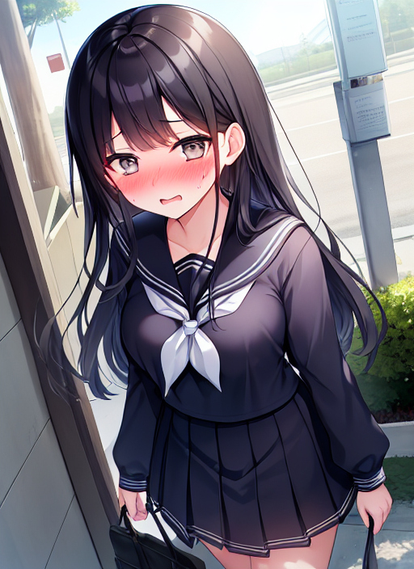

入学式
４月某日、とある中学校の校門近くに一人の男性がいた。 男性の名前は瀬戸あつきといい、妹の美優の入学式のためにここへとやって来たのだ。 今、美優はトイレに行っており、あつきは美優が戻ってくるのを待っていた。
「まだ戻らないのか・・・もう少しで式が始まるぞ。」
そう呟きながら、美優が戻ってくるのを待ち続けるあつき。 ふと校門の側に生えている桜の樹を見ると、フワリフワリとまるで雪のように花びらを舞い散らしている。 あつきはそれを見て、自分の中学時代のことを思い出した。
（中学校・・・今からもう何十年も前か・・・。入学式の頃は慣れない制服に苦労したっけ・・・。だが、少しもすれば慣れて中学生生活も楽しめるようになったな・・・。あの頃は楽しかったな・・・・・もし人生がもう一度やり直せるんだったら・・・中学生生活をもう一度楽しみたいな・・・。）
舞い散る桜吹雪を見ながらあつきはそう思い、懐かしむように校門をくぐった。
するとその時だった。 突然あつきの身長がグググッと凄い勢いで縮んだかと思うと、次の瞬間には短く刈り込まれた髪がサラッと伸びて見事なロングヘアとなった。 それだけじゃない。 角ばっていた顔はキュッと小さくなり、目や鼻や口などの顔のパーツはその変わり果てた顔に合った可愛らしい物になった。 ガシッとした腕や脚はギュッと細くなり、そこに生えていた剛毛はパラパラ抜け落ちてスベスベとした白い肌が露わになる。 少しばかり突き出していたお腹はキュキュキュッと括れ、平らな胸やガッシリとしたお尻はムクムクと膨らんでプルルンと柔らかく弾む。 更に、着ていたスーツは新品同様のセーラー服に変わり、ズボンは糊の利いた紺色のスカートになった。
数分後、あつきの身に起こった事態は治まった。 しかしその姿は40代前半の筋肉質な男ではなく、小学生のあどけなさがまだ残っている中学生くらいの女の子だった。 あつきだった女の子はキョロキョロと見渡すと、首を傾げた。
「あれぇ？私、ここで何してたんだっけ？」
口から出る声や口調も、女の子のそれに変わっている。 今の様子から察するに、どうやら身体だけでなく記憶や性格すらも変わってしまっているようだ。 自分が校門で何をしていたのか思い出せず、あつきはウーンウーンとうなる。
すると、
「ごめーん、玲奈ちゃーん！」
どこからか女の子の声がした。 声のした方を向くとそこには、あつきの娘の美優が。
「ごめんね玲奈ちゃん、遅くなっちゃって。待ちくたびれちゃった？」
「ううん、大丈夫だよ。じゃあ、入学式行こうか？」
「うん！」
あつきと美優はそう言い合うと互いに手をとり、入学式の会場である体育館へと向かった。